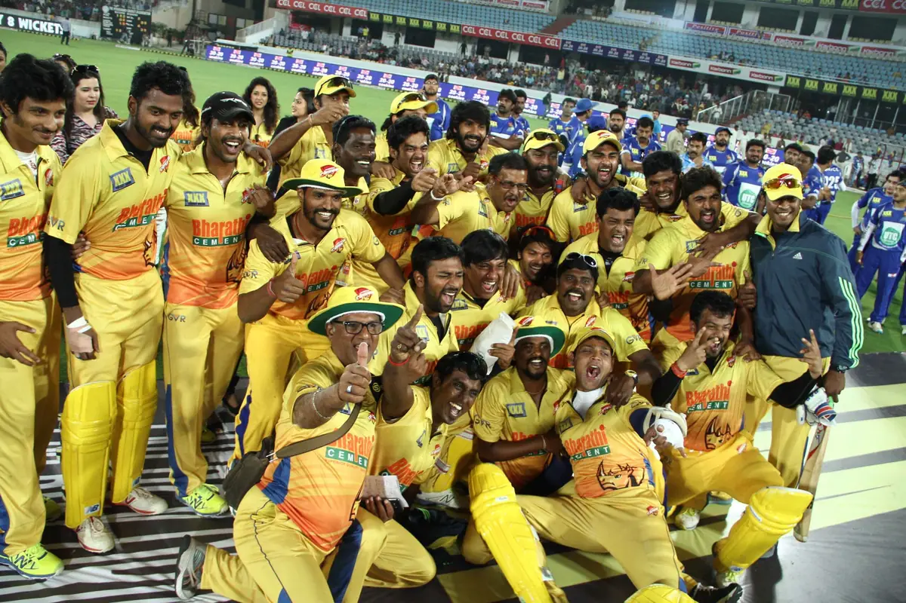
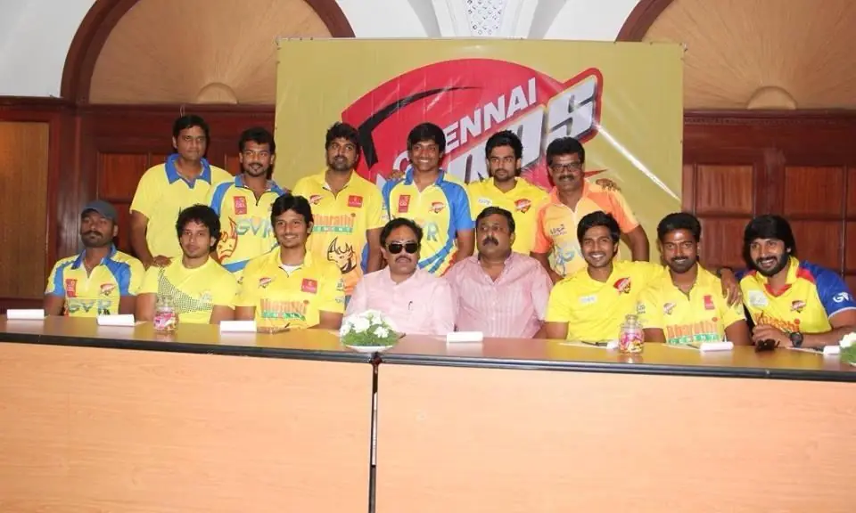
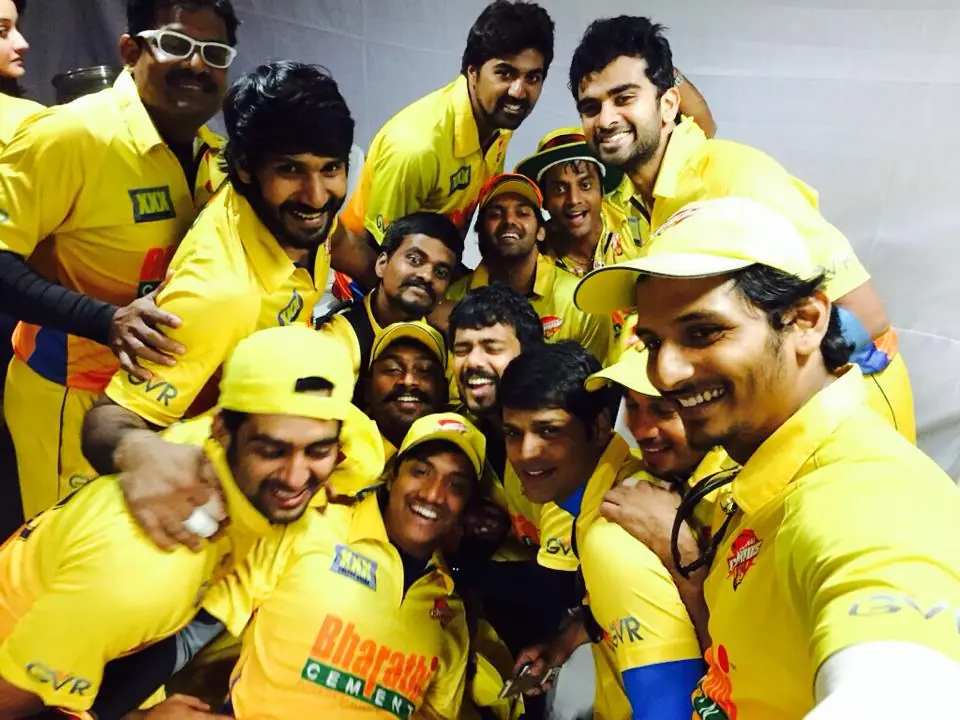
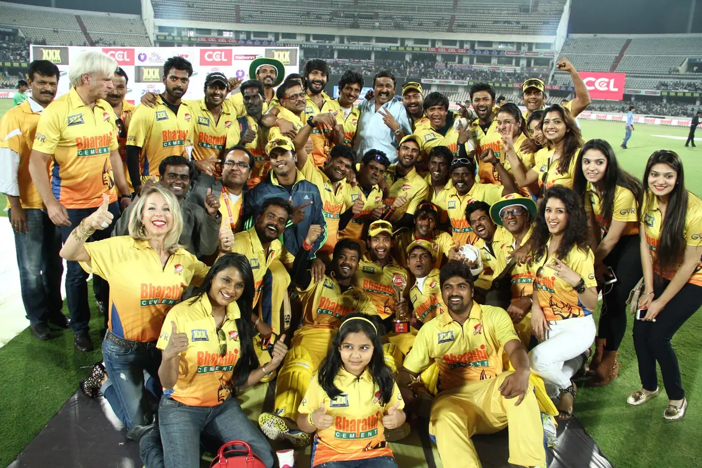
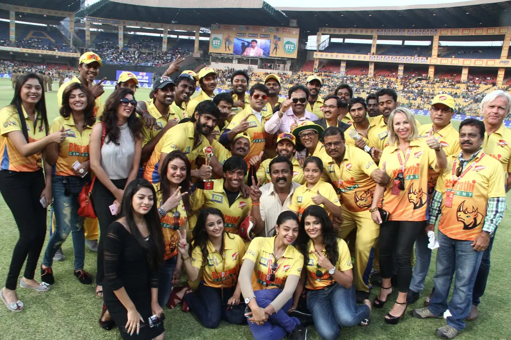

Coach & Mentor — Not a Player
THE ROLE
THE ROLE
BEHIND THE WIN
The Celebrity Cricket League is built for actors, not professionals — a tournament where film stars play the game rather than watch it. Getting a squad of actors match-ready still takes a real coach.
That's the seat he took: mentor and coach to the side that went on to win the tournament, working technique and match sense into a team that the cameras usually only see celebrating.

Champions — Team Celebration
The Winning Squad, On the Ground

Match Day

On the Field

Team Moment

Stadium Atmosphere, Finals Day
A note on this page: CCL (Celebrity Cricket League) is a tournament for film actors, not professional cricketers. His involvement was as coach and mentor to the winning team — not as a player on the field.